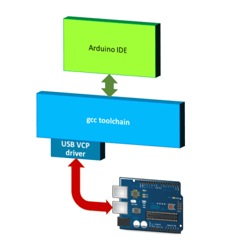
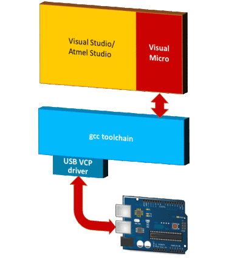
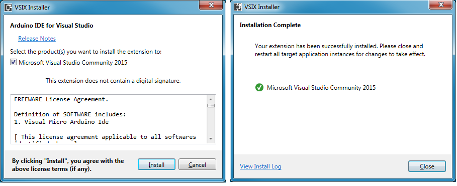
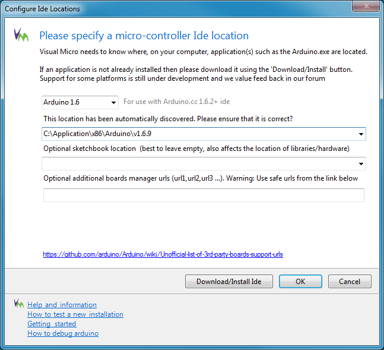
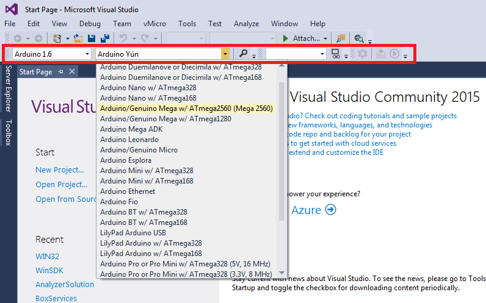
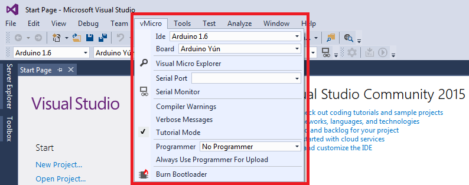
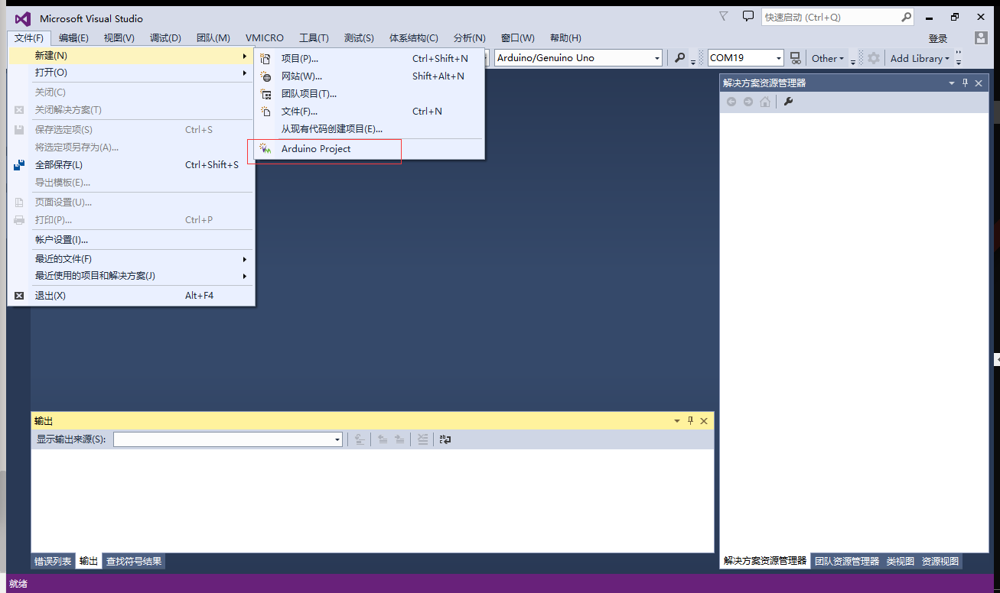
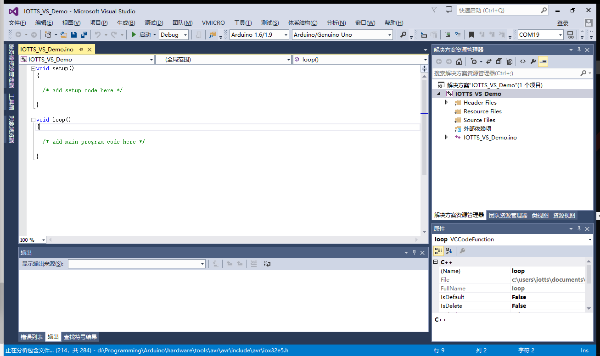
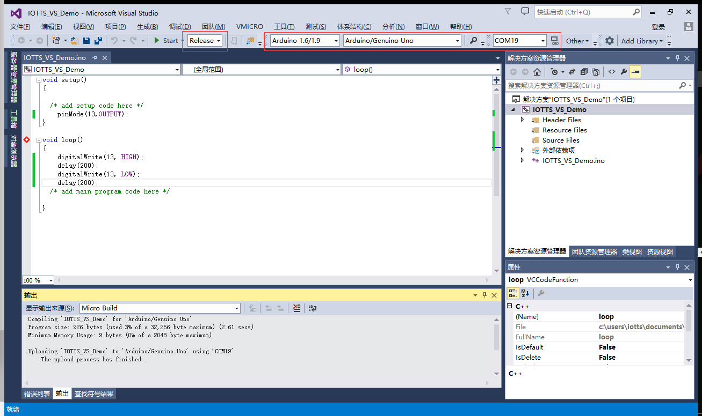

Arduino IDE 的缺点
虽然 Arduino 很流行很火爆，但是 Arduino IDE 却非常、非常、非常弱。编写代码很不方便，只能说提供了一个最基本的写代码的工具而已，调试代码也很不方便。而且，Arduino IDE 中写代码，只能是把所有的源代码都集中在一个 .ino 文件中，对于写惯了 C++ 程序的工程师来说，Arduino IDE 完全不具备工程化的可能，只能给一般的爱好者当一个玩具而已。
所以，本教程既然大言不惭地号称是“高级”教程，首先要做的就是替换掉 Arduino IDE 这个开发工具。当然实际上并不是真的替换掉了 Arduino IDE 的所有的东西，而是把它的有用的工具链（gcc toolchain）进行了重用，然后编写代码、代码管理和调试等工作由更现代化的工具来完成。
代替Arduino IDE工具安装
替代工具：Arduino for Visual Studio（Visual Micro）
说到太阳系中最强大和最友好的 C++ IDE，我个人认为是Visual Studio。当然您可能并不赞同我的说法，或许您更倾向于 Eclipse。好吧，您可以自行寻找解决办法，用 Eclipse 开发 Arduino 也是完全可行的，也有好事者用 vim 开发 Arduino……抱歉，扯远了。
在本节中，我们需要用到两个软件：
Visual Studio
Visual Micro (Arduino for Visual Studio 插件)
Visual Micro 的原理
简单说一下为什么我们可以在 Visual Studio 中开发 Arduino 应用程序。
官方的 Arduino IDE 开发 Arduino 应用程序，是这样的：

而 Visual Studio + Visual Micro 开发 Arduino 应用程序，是这样的：

所以说，我们替换掉的仅仅是 Arduino IDE 这个蹩脚的代码开发工具，但是编译、调试和代码烧写用的还是原来的 gcc toolchain。
$\color{red}{Notes：}$上图中，你会看到Atmel Studio。Atmel Studio是Atmel公司推出的免费开发工具，它是基于Visual Studio Shell的。所以本文虽然是针对Visual Studio来讲的，但也同时适用于Atmel Studio。
有关详细的Visual Micro工作原理的解释，请看这里：How the Software Tools WorkTogether
Visual Studio 安装
Visual Studio 有很多版本，比如说 Professional、Enterprise、Ultimate……这些都可以用来开发 Arduino 应用程序。当然对于个人开发者来说，可能不会去购买付费版本的 Visual Studio，那么用免费的 Community 版本就可以了。
在本例中，我使用的是 Visual Studio Community 2015。
在安装 Visual Studio 的时候，有很多可选项，对于开发 Arduino 应用程序来说，只要装有 C++ 开发的安装选项即可。
Visual Micro 安装
Visual Micro 的官方网站是：http://www.visualmicro.com
这个软件有收费版和免费版，收费版也不贵，Commercial $75
for 1 PC，批量有优惠。对于个人来说，装免费版就完全够用了。
所以说我们用的 Visual Studio 和 Visual Micro 都可以用免费的版本，对个人来说经济上零压力。
Visual Micro 下载下来是一个 .vsix 的安装包，双击就可以进行安装了。注意安装前要关掉 Visual Studio。

接下来我们应该进行 Visual Micro 的设置。
设置 Visual Micro
安装 Visual Micro 之后，首次打开 Visual Studio，就会弹出以下窗口：

以上窗口中，我们需要正确选择 Arduino IDE 的版本和安装位置，好让 Visual Micro 能够帮助 Visual Studio 找到相应的 gcc toolchain。
至于其它的设置项（Optional sketchbook location、Optional additional boards manager urls），我们现在初始设置的时候可以先不理会，以后需要的时候可以再对此做设置。
实际上 Visual Micro 已经根据注册表里面的信息自动填好了初始设置项，我现在需要做的仅仅是确认无误之后点击“OK”按钮就可以了。
选择软件版本、开发板型号和端口
然后，你会发现 Visual Studio 的工具栏和菜单里面多了这些东西：


看来它是把 Arduino IDE 的工具栏和菜单里面的东西搬到这里来了。
新建Arduino工程
接下来我们就可以体验在 Visual Studio 里面写 Arduino 程序了。
如下图新建一个Aarduino工程


接下来我们先写一个点灯的程序
直接贴代码了
void setup()
{
/* add setup code here */
pinMode(13,OUTPUT);
}
void loop()
{
digitalWrite(13, HIGH);
delay(200);
digitalWrite(13, LOW);
delay(200);
/* add main program code here */
}
编译的话我们选择正式编译Release
接下来根据开发板的具体情况选择板子类型、端口号

点击Start编译并将程序下载到开发板上，然后就会看到灯在闪烁